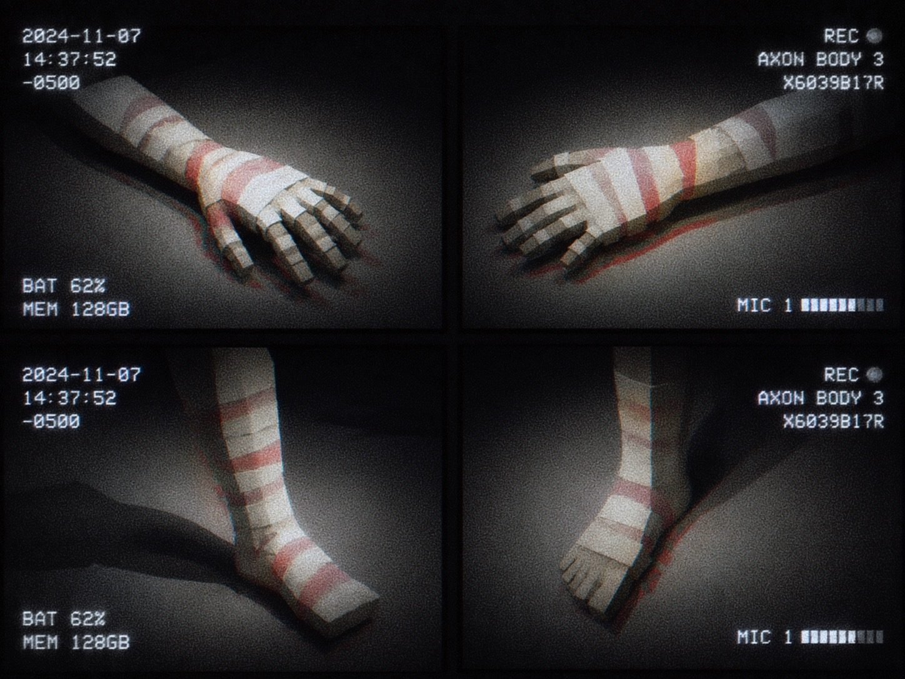
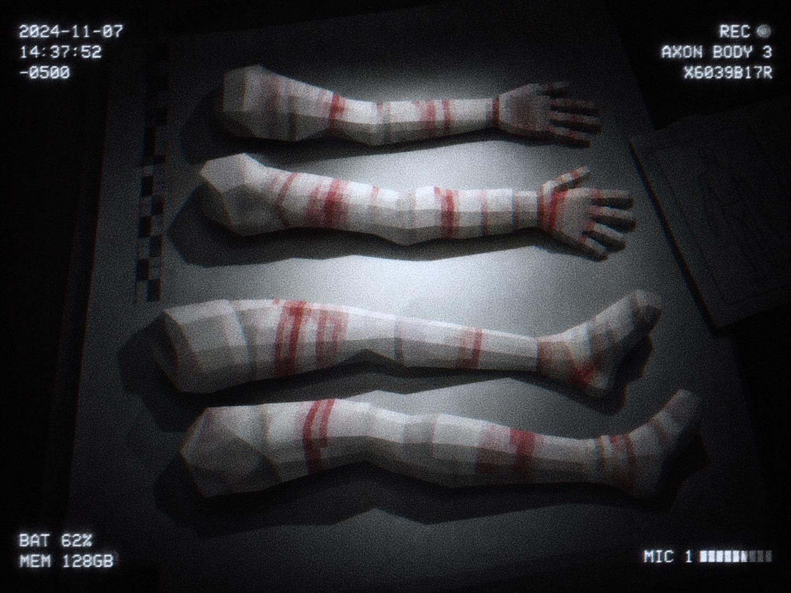
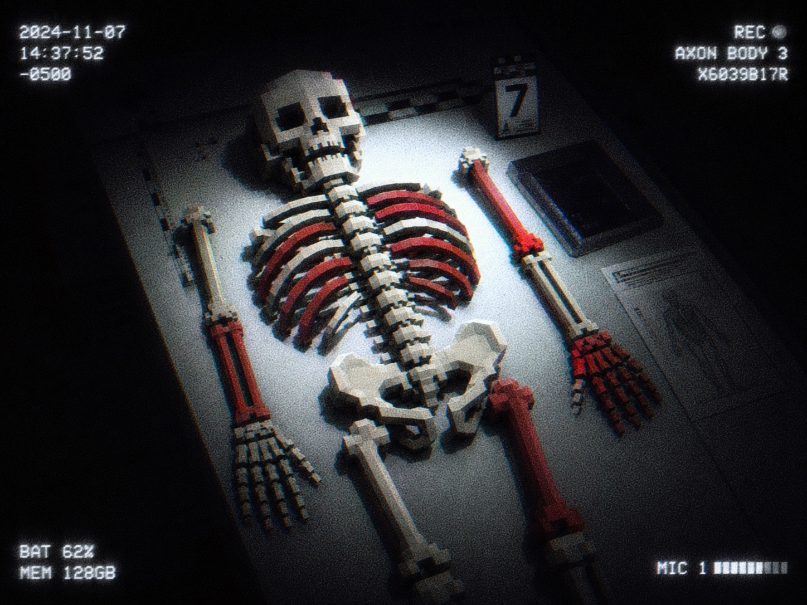

CASE FILE // MEDICAL DIVISION ARCHIVE
FILE 6321
Five records pulled for cross-reference against Kindling usage logs. Compiled from field intake, recovery reports, and archive backfill. Subject designations reflect file status at time of retrieval, not confirmed identity.
DESIGNATION: UNVERIFIED · FIELD ALIAS "SPARROW" · KEEP OF RECORD: RED SALT


Earliest-stage degradation in the current sample set. Retained as baseline for comparison against Subjects 02 through 04. No Living or Dead Demand activity recorded — Self-tier use only, to date.
DESIGNATION: NONE ON RECORD · RECOVERED FROM CULT COMPOUND, SITE UNDISCLOSED · KEEP MARKERS: BLACK NAIL, BLACK THREAD, RED SALT

Compound raided after unrelated activity flagged nearby. No subject located, living or dead. Filed under Negative Box for the marking pattern alone.
DESIGNATION: OPERATOR ZERO · OLDEST FILE IN ARCHIVE, ORIGINAL CASE NUMBER LOST · KEEP OF RECORD: RED BONE

Held in long-term observation. Every attempt to close the file has been overturned — the archive treats Operator Zero as a live reference, not a closed case.
DESIGNATION: · KEEP OF RECORD:

Most of this file remains sealed at Division level. What's cleared for cross-reference is limited to the engagement summary above.

Every Kindling routes through one of four Keeps — the object that carries its debt forward. Black Nail governs perception, nerve, and current; Black Thread governs binding, control, and puppetry; Red Salt governs kinetic force, motion, and distance; Red Bone governs identity, presence, and disguise.
None of the subjects above drew from only one. Degradation compounds fastest where two or more Keeps are worked against the same tissue — the pattern common to every file in this archive.